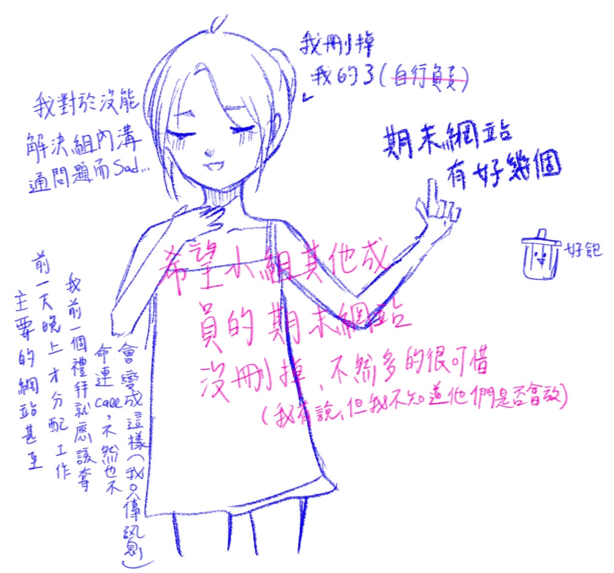

作品集
課程名稱：數位敘事實作與應用
學號：411111753
系級：大傳三A
姓名：莊珮妤
指導老師：王錦裕老師

-
目 錄
- HW1台中市景點推薦網
https://uwu-bob.github.io/hw1 - HW2文化美食大聯盟
當天沒到與無法透過錄製內容重新製作所以放棄 - HW3個人資訊網
https://uwu-bob.github.io/hw3/ - HW4故事地圖StoryMap實作
跑不出來(摀臉) - HW5(分組)Suno歌曲製作
學習的悲歌 - HW6互動式網頁圖表
https://uwu-bob.github.io/hw5/ - 期末專題
https://easygoing-gift-058322.framer.app/ - 自主學習
https://lit.link/en/Iuvcat